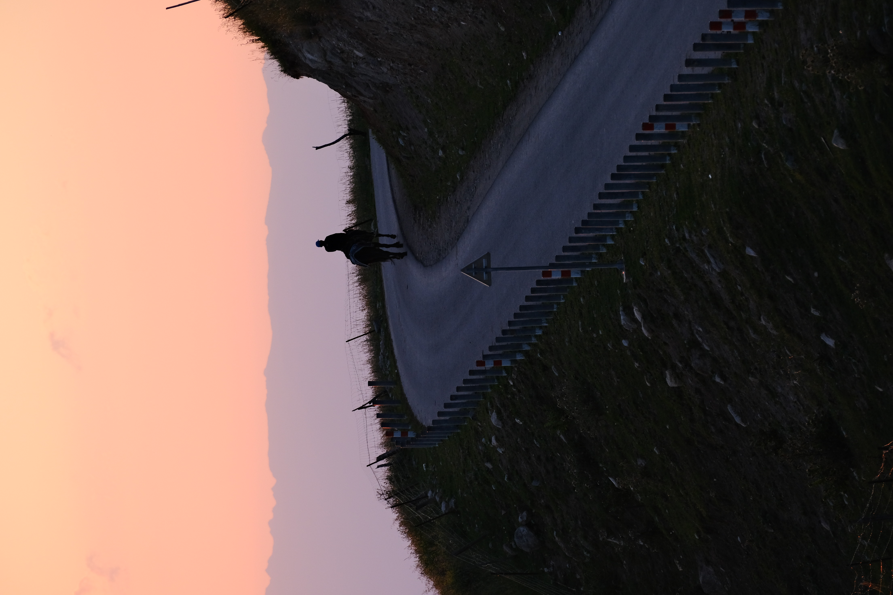

← Back to Gallery


Sai Li Mu
Lake Sayram at Sunrise
2024-07-31
Sayram Lake sits at 2,000 meters, ringed by pine-covered hills and snowcapped peaks. At dawn, the water is a perfect mirror and the air holds the particular silence of high altitude. If you don't visit Sayram Lake, you've lived in vain.
Grassland Sunset
2024-07-29
Walking along the mountain road as the sun goes down, the scenery is truly quite beautiful.
Broken Branches
2024-07-30
I don't know why there are broken tree stumps here.
Mountain View
2024-07-30
Half of the mountain is covered in woods, while the other half consists entirely of rock.
Pine Forest at the Lake's Edge
2024-07-31
The sun sets very late here, and the evening glow lingers for a long time.
A Rider
2024-07-31
Beneath the setting sun, a man on horseback is on his way home.
